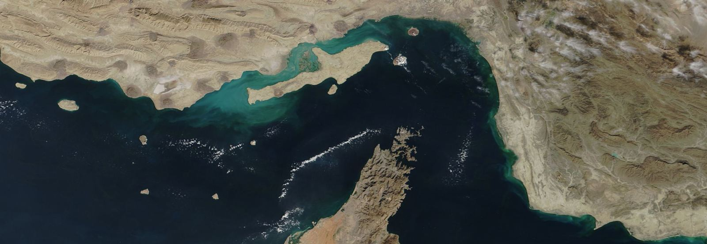
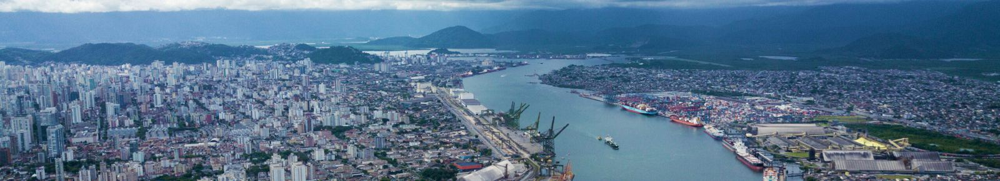
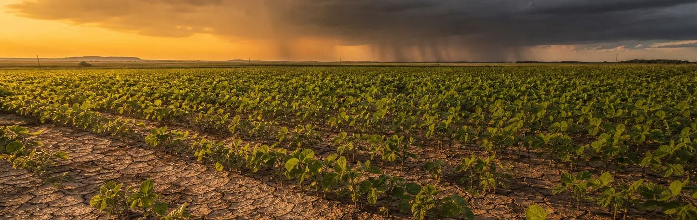

11dez
Evento Diálogos Estruturantes
II Prêmio Melhores do Ano Diálogos Estruturantes
A noite que reconhece as empresas, gestores e projetos que fizeram a infraestrutura avançar em 2026.
11 de dezembro | B Hotel, Brasília (DF)
Saiba maisIncentivos e energia renovável tornam as ZPEs ideais para atrair data centers focados em IA

ArtigoInstabilidade no Golfo Pérsico encarece insumos, altera rotas marítimas e exige mais eficiência da logística portuária brasileira

EventosEncontro de encerramento em Santos reuniu operadores, sindicatos e OGMOs de dez portos
 42 min
42 min
Para o presidente do Sicepot-RS, reforma no sistema de contas públicas é uma das medidas para o desenvolvimento do setor

AgroPlano reúne ações de manejo, crédito e monitoramento para as regiões mais expostas à seca e ao excesso de chuva
ArtigoPor que a cobertura precisa acompanhar o risco climático e o custo de produção
 Artigo
ArtigoO novo sistema será integralmente implementado em 2033. Concessões precisam preservar tarifas justas no caminho
A noite que reconhece as empresas, gestores e projetos que fizeram a infraestrutura avançar em 2026.
11 de dezembro | B Hotel, Brasília (DF)
Saiba maisPark Shopping Canoas, Canoas (RS)
Centro de Eventos do Ceará, Fortaleza
Apas, São Paulo
As decisões que movem infraestrutura, portos, agro e tributos, resumidas para ler em cinco minutos. De segunda a sexta, às 7h.